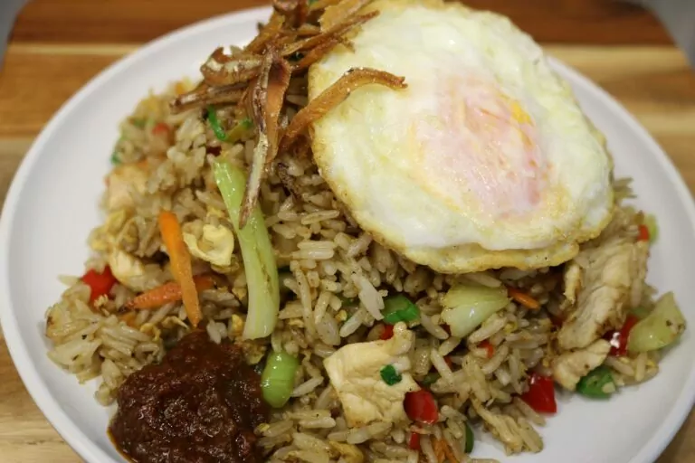
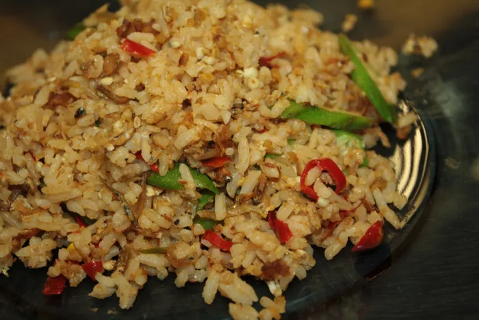
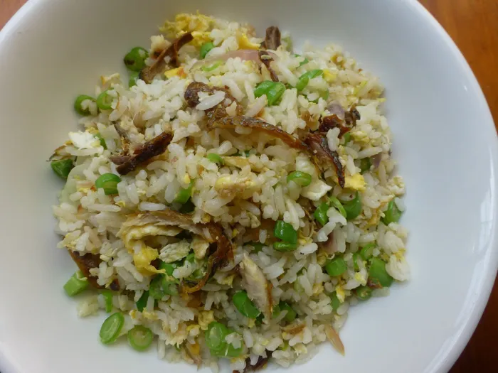
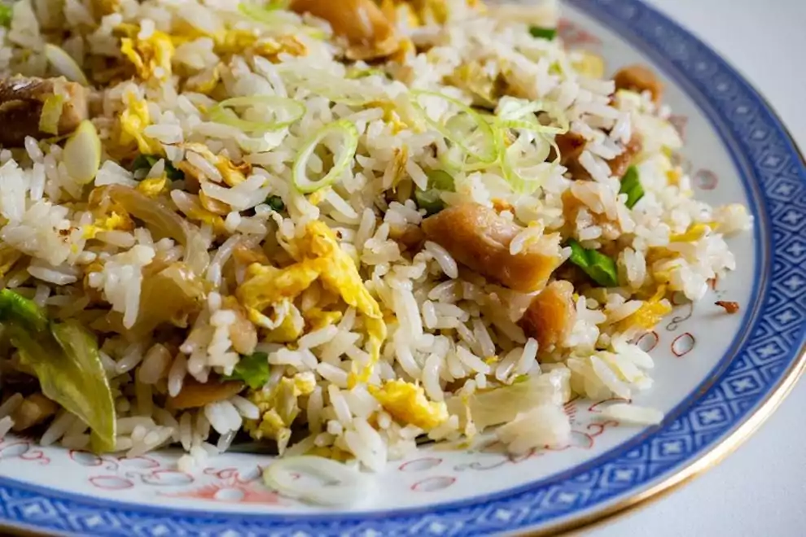

Ianya menyajikan nasi goreng tanpa isi ayam atau daging. Walaupun kelihatan biasa sahaja, ianya masih secukup rasa.
Nasi goreng ini mempunyai telur hancur dan kadangkala isi ayam dan udang juga turut disajikan.
Nasi goreng kampung merupakan nasi goreng yang disajikan bersama ikan bilis yang digoreng rangup. Sayur kangkung merupakan sayur yang kerap ditambah dalam menu ini.
Nasi goreng belacan ini kelihatan sama seperti nasi goreng biasa, namun penambahan belacan sebagai bahannya memantapkan lagi hidangan tersebut.
Jika anda merupakan peminat makanan pedas, nasi goreng yang seharusnya anda nikmati ialah nasi goreng cili padi.
Ianya menyajikan nasi goreng biasa bersama ikan masin yang digoreng dan dihancurkan atau dipotong kecil.
Berikut adalah gambar-gambar nasi goreng yang disukai saya